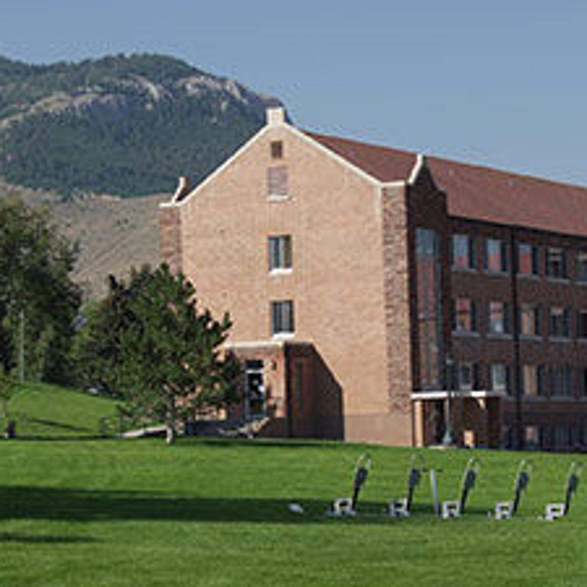

My Freshman Year

My freshman year I started as a biochem major, which I switched to business at semester. Along with that I lived in room 201 in gaudaluepe hall. I liked living in guad, I was in a triple which was nice. The one thing I didn't like about guad was the parking lot was too small so I always had to park on the street
During my first year at Carroll I made quality friends. My first semester I was a biochem major, which I struggled in so I changed to a business major the next semester. In my second semester I took some business realated classes that I found very interesting, the one class MIS got me interested in getting a computer science minor which I began my sophmore year.